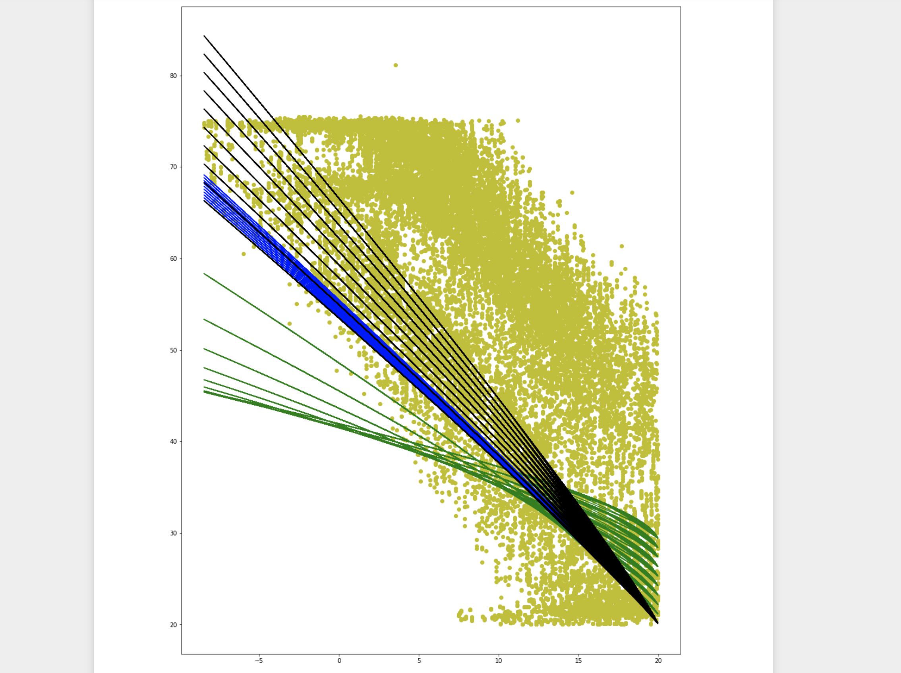

I was lucky enough to spend the summer of 2019 as a product development intern at KUGU Home in Berlin, Germany. KUGU offers a simplified utility billing platform for apartment building managers and landlords.
During my time at the company, I helped develop an analysis and visualization tool for their next-generation energy efficiency product. I pulled temperature data from a timeseries database, wrote a Python script to run the data sets through multiple different regressions, and then used Jinja templating to display graphs and relevant statistical relationships. I also implemented a Python script to publish MQTT messages directly to a timeseres database to improve pipeline efficiency.
Here is an example visualization of how different variables affect a water heater efficiency model:

A huge thank you is in order to the incredible group of people I worked with last summer. I learned so much just by being in proximity to real product designers and software developers.